Gradual Program Analysis for Null Pointers
Sam Estep Carnegie Mellon University, Pittsburgh, PA, USA
Wise Carnegie Mellon University, Pittsburgh, PA, USA
Jonathan Aldrich Carnegie Mellon University, Pittsburgh, PA, USA
Éric Tanter Computer Science Department (DCC), University of Chile, Santiago, Chile
Johannes Bader Jane Street, New York, NY, USA
Joshua Sunshine Carnegie Mellon University, Pittsburgh, PA, USA
Nullness Check
- 标注: @Nonnull, @Nullable
- 位置：方法的参数和返回值
- 现有工具: Facebook’s Infer Eradicate, Uber’s NullAway, NullSafe, Java Nullness Checker
- 当标注缺失，现有的工具会补上一个默认的标注：
- Infer Eradicate, Java Nullness Checker: @Nonnull
- NullAway: 汇(sink)=@Nullable，源(sources)=@Nonnull
- 这会导致False Positive，同时是unsound的
Example of False Positive
class Main {
static String reverse (String str) {
if (str == null) return new String();
StringBuilder builder = new StringBuilder(str);
builder.reverse();
return builder.toString();
}
public static void main (String [] args) {
String reversed = reverse(null);
String frown = reverse(":)");
String both = reversed.concat(frown);
System.out.println(both);
}
}
- Infer Eradicate, Java Nullness Checker: @NonNull
- 行9出现警告，是FP
Example of False Negative
class Main {
static String reverse (String str) {
if (str == null) return null;
StringBuilder builder = new StringBuilder(str);
builder.reverse();
return builder.toString();
}
public static void main (String [] args) {
String reversed = reverse(null);
String frown = reverse(":)");
String both = reversed.concat(frown);
System.out.println(both);
}
}
- 行3出现警告，是FP
- 行11没有警告，是FN（reserved是null）
Gradual Null Pointer Analysis
- 不添加默认标注
- 乐观处理：当标注缺失而无法检查，那就不检查
- 这样必然是unsound的，因此添加动态检查
- 乐观的静态检查减少FP + 动态检查保证soundness
class Main {
static String reverse (String str) {
if (str == null) return new String();
StringBuilder builder = new StringBuilder(str);
builder.reverse();
return builder.toString();
}
public static void main (String [] args) {
String reversed = reverse(null);
String frown = reverse(":)");
String both = reversed.concat(frown);
System.out.println(both);
}
}
class Main {
static String reverse (String str) {
if (str == null) return null;
StringBuilder builder = new StringBuilder(str);
builder.reverse();
return builder.toString();
}
public static void main (String [] args) {
String reversed = reverse(null);
String frown = reverse(":)");
String both = reversed.concat(frown);
System.out.println(both);
}
}
PICL: A Procedural Imperative Core Language
- 一种对编程语言的抽象
Control Flow Graph
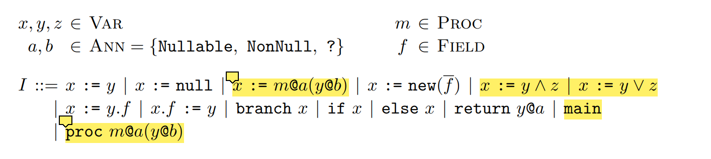 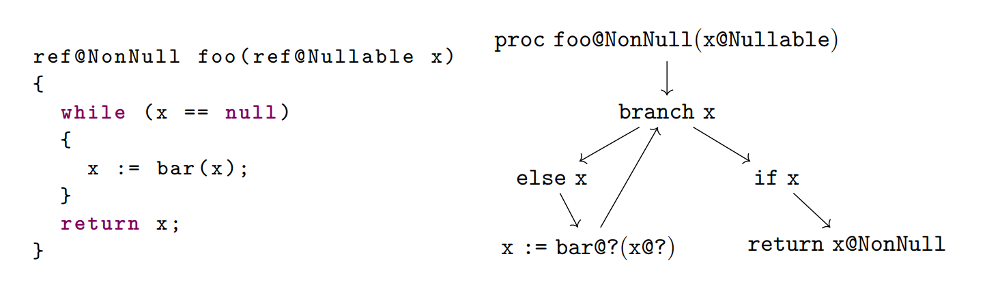Dynamic Semantics
- 对程序（PICL）动态行为的建模
- 主要用于后面形式化的证明


 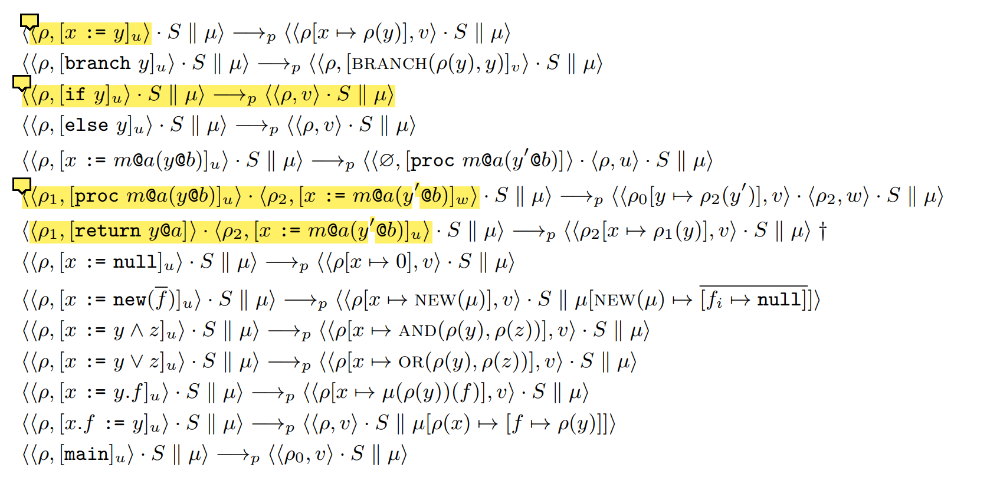
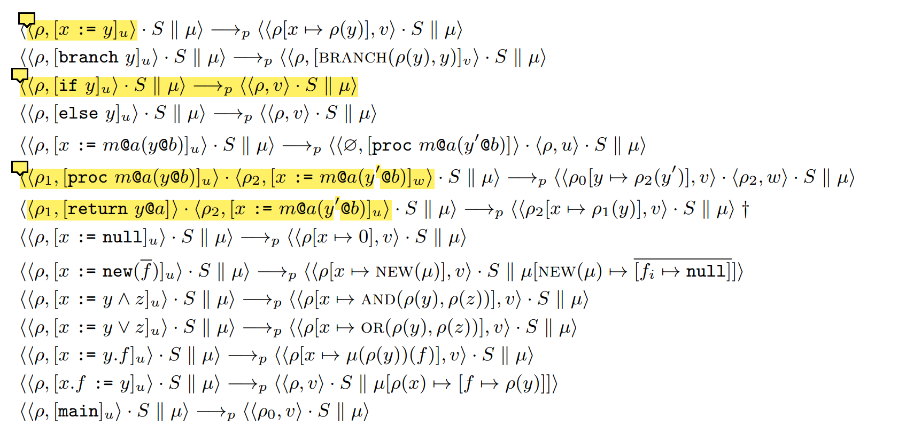
NPA: A Static Null-Pointer Analysis for PICL
- 我们先介绍纯静态分析的过程
- 假设所有标注都打上了，也就是没有“?”的情况
- 证明在这种情况下静态分析是sound的
Semilattice of Abstract Values
- 静态分析的方法是数据流分析
- 数据流值是每个变量有三种状态：Nullable，Null，Nonnull
Transfer Function
Fixpoint Algorithm

Static Warnings
- 安全函数(safe function)：用来检查数据流值是否满足指令要求的状态，不然就报错 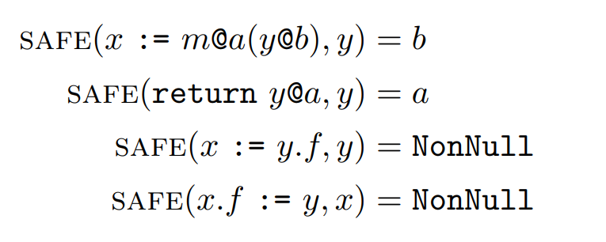
- σ(x) ⊑ safe(x)
Soundness of NPA
- 假如一个程序所有代码都满足σ(x) ⊑ safe(x)，我们说这个程序是有效的
- 对于有效的程序，假如它的运行时状态满足不动点算法产生的数据流值，我们说这个运行时状态是有效的
- 对于一个有效的程序和有效的运行时状态，它必有后继的状态。即能继续运行。
- 对于一个有效的程序和有效的运行时状态，它后继的状态也是有效的
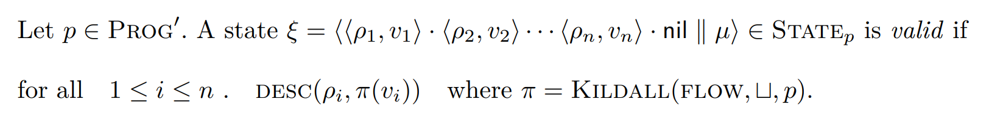

GNPA: Gradual Null-Pointer Analysis
- 考虑缺失标注的情况，对原来NPA进行升级
- 数据流值
- 新状态代表为旧状态的一个集合
- NonNull, Null, Nullable的集合只包含它们自己
- 带问号的新状态的集合则代表由多个个旧状态组成
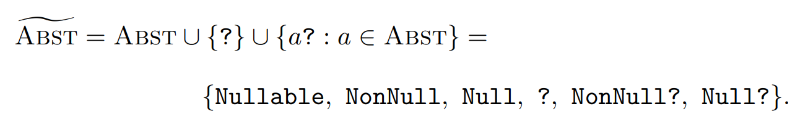
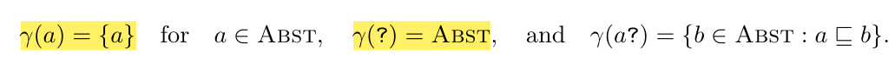

Shifted Join & Semilattice
- 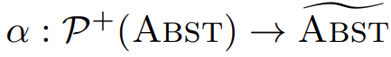
- alpha的结果：6个新状态中，覆盖â且最小
- 新状态的join：枚举元素、两两join、alpha
- 新状态的半格结构
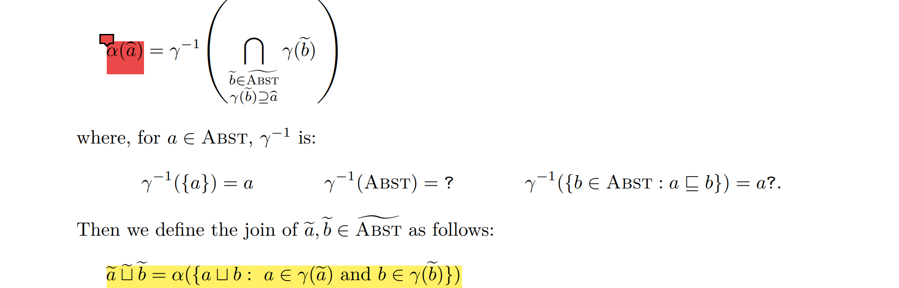

 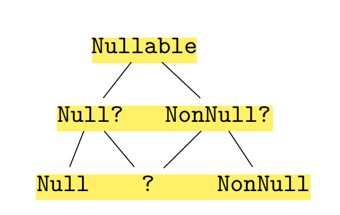
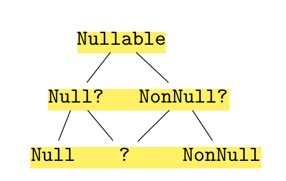
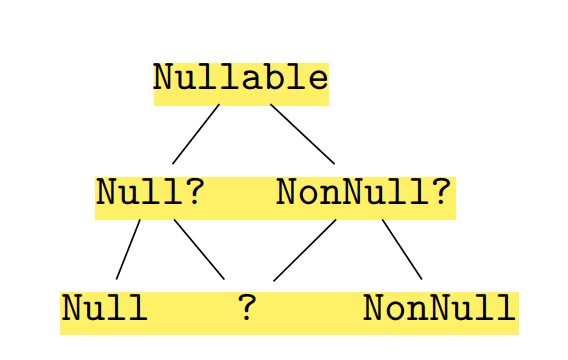
Shifted Order
序：定义“⊑”；不是偏序；主要用于safe函数（也就是静态检查）
 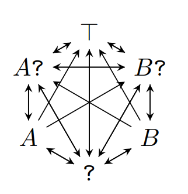
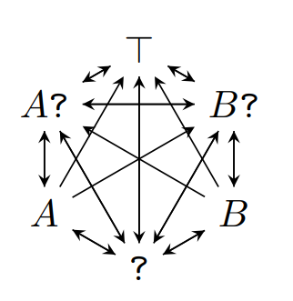
Shifted Transfer Function & Safe Function
- 传递函数：枚举元素、组合、原传递函数、alpha
- safe function
- 不动点算法不变
- 设计思路?
- 静态报错

 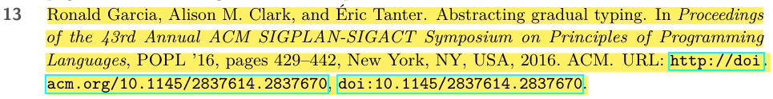
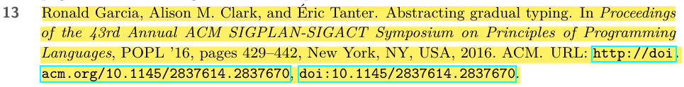

Dynamic Checking


Gradual Properties
- 渐进分析是和静态分析兼容(conservative extension)。当标注全部打上，渐进分析的效果和上面说的静态分析应该一样
- conservative static extension
- conservative dynamic extension
- 渐进分析是sound的
- gradual progress
- gradual preservation


Gradual Properties
- 渐进保证（gradual guarantee）
- static gradual guarantee：有效的程序缺失标注不会引入静态警告，不会破坏有效性
- dynamic gradual guarantee：缺失标注不会改变程序可观测到的行为，不会破坏可归约性
- 丢失精度是无害的


Prototype
- Graduator
- 基于Facebook's Infer框架，能够同时分析C、C++、Obj-C、Java
- 简化半格
- 域标注

Result
- 静态警告
- Eradicate: 1489, NullSafe: 654, Graduator: 228, NullAway: 0
- 怎么还有FP？
- 不是由标注缺失引起的，其他的不精确
- 由于对域的处理不是流敏感的

Result
- 动态检查
- 用无标注的代码
- 清除67%的解引用检查

Conclusion
- 构造了一个框架，能把基于标注的静态分析变成渐进的
- 这个渐进分析是静态分析的conservative extension，且满足gradual guarantee
- 安全的静态分析能够避免冗余的动态检查；不安全的静态分析能够减少FP；GPNA能同时减少FP，且避免冗余的动态检查